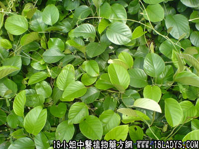

白鹤藤(中药材植物名:白鹤藤)(植物科目:旋花科)

别名：白背丝绸。
植物名：白鹤藤。
生长环境：本品为缠绕草质藤本。在平原地区的灌木丛或河岸边，水沟边生长。
分布：广东南部至越南有分布。
入药部分：全株。
采期：全年。
自采地点：郊外荒地。
性味：性微凉，味淡。
功能：去湿消肿。
主治、用量和用法：1、水肿：生用擂烂取汁，加糯米粉和糖煎作饼（不用油盐）食；2、百子痰，配伍用（见白石笋条）；3、生竹，配伍用；4、湿热肚痛痢疾；干用1至2两，清水煎服。
验方：（治小儿生竹方）干白鹤藤5钱、寮刁竹2钱、干蚌花2钱、黄皮根3钱、清水三碗，煎成大半碗，分三次服。
（方解）本方用白鹤藤利水去湿，寮刁竹健脾去湿，蚌花除痰去湿，为治疗生竹经验药，全方药性平和，不寒不燥，为治小儿生竹有效之剂。
（方歌）小儿生竹白鹤藤，刁竹蚌花黄皮根，清泉三碗成碗半，健脾去湿法最珍。